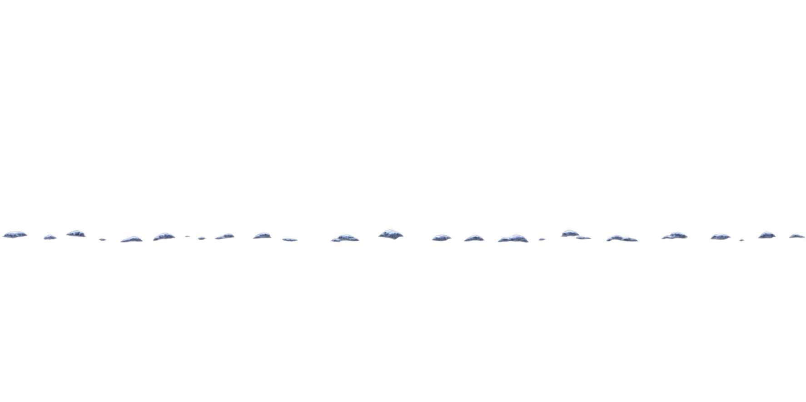

컨셉의 시작 구역

동굴 입구 배치 후보





사용자 변경 방향: 숲에서 오른쪽 바위 동굴로 진입. 고목 파일은 보존하고 현재 배치에서 제외했습니다.

화면 20%부터 지정 위치까지 발 폭 기준의 작은 표시 마스크를 반복한 비교입니다. 간격은 시각 검토 변수이며 실제 걸음 간격이 아닙니다. 바위는 그대로 유지됩니다. 실제 발 접촉·이동 감지·저장 기능은 없으며 발자국 모양이 확정된 것도 아닙니다.
고목 몸통·앞뿌리·고목 눈을 제외했습니다. 동굴 입구에는 어두운 내부 벽이 포함됩니다. 현재 암벽과 바닥은 구도 검토용 한 소재이며 최종 충돌 지형이 아닙니다.
컨셉 좌상단 640×480에서 인물 높이를 약 24~28px로 육안 추정 → 비교 목표 26px(화면 높이 5.42%). Run_00 실제 불투명 그림 높이 336px 기준으로 환산했습니다. 이전 시안은 같은 범위에서 약 74.3px로 약 2.86배 컸습니다. Unity Scale 확정값이 아닙니다.숲에서 동굴까지 바위 지면 후보를 추가했습니다. 별도 눈 덮개를 추가했고 동굴 내부 확장은 아직 미제작이며, 실제 지형 충돌과 접합 검증은 남아 있습니다. 전체 맵 경로 변경 범위는 확정하지 않았습니다.
Run_00의 오른발 접지 부근(x240~330, y395~410, alpha≥128)에서 보이는 폭45px → 컨셉 비교폭 약3.48px. 투명 프레임 전체 너비를 제거 폭으로 사용하지 않습니다.
눈 표시 밝기 80%는 HTML 검토값이며 PNG는 원래 밝기입니다. 동굴 레이어가 앞에서 눈을 가리므로 내부에는 눈이 이어지지 않습니다.